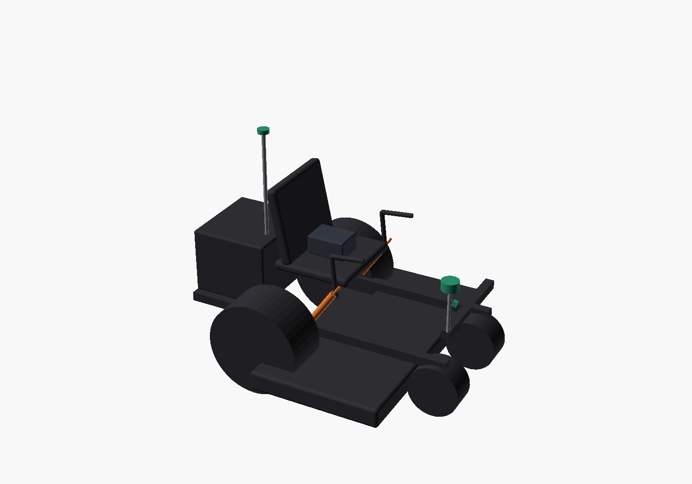
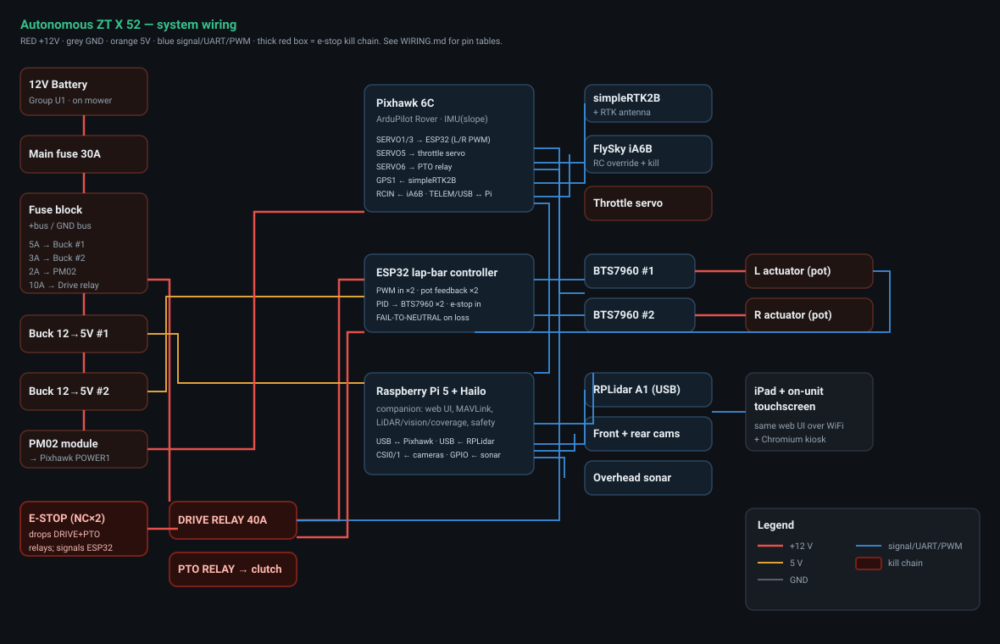
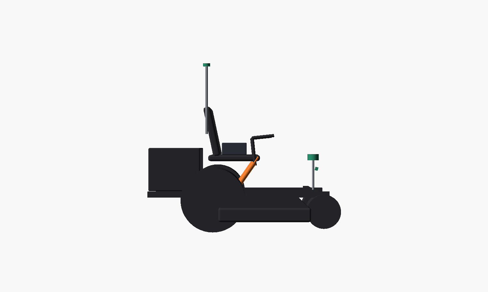
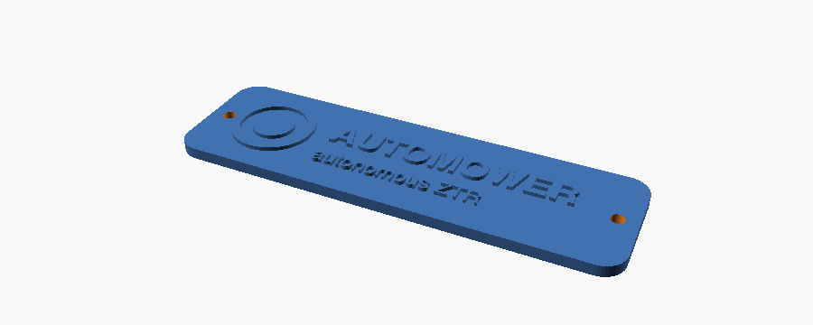

A full retrofit that turns a commercial gas zero-turn into an autonomous, iPad-controlled robot — RTK GPS, LiDAR, cameras, and on-device AI — built end-to-end across hardware, firmware, control software, and parametric CAD.

Commercial autonomous mowers exist, but they're ~$25k professionally-installed B2B systems. This project does it as a ~$1.8k reproducible retrofit: a parametric kit that bolts onto a Gravely ZT X 52 (and adapts to any zero-turn by changing a handful of measurements). It drives itself, learns a yard by being driven once, plans its own coverage, sees obstacles, refuses unsafe slopes, and stops for low branches — all controllable from an iPad or an on-unit touchscreen.
A Pixhawk running ArduPilot Rover owns drive, RTK navigation, and failsafes (skid-steer fits a zero-turn natively). A Raspberry Pi 5 + Hailo-8L rides shotgun for LiDAR obstacle-stop and camera AI, talking to the flight controller over MAVLink. A small ESP32 closes the lap-bar position loop the autopilot can't.

Drive the path once; it records the RTK route and repeats it autonomously.
Outline a boundary on the map; it auto-plans efficient back-and-forth mow rows and tracks % mowed live.
360° LiDAR + camera AI stop for obstacles and people; an upward sensor stops before the mast hits a low branch.
The IMU enforces a rollover-slope cutoff and a mow-up/down strategy on grades.
Loss of the e-stop or control signal drives the steering back to neutral and cuts power.
A clean web control UI runs identically on the iPad over WiFi and the unit's own touchscreen.
| Base machine | Gravely ZT X 52 (2021, 24 hp Kohler) · 52″ fabricated deck · electric PTO clutch |
|---|---|
| Autonomy core | Pixhawk 6C · ArduPilot Rover (skid-steer, RTK, geofence, failsafes) |
| Companion / AI | Raspberry Pi 5 (8 GB) + Hailo-8L (13 TOPS) — vision, LiDAR, coverage, control UI |
| Positioning | RTK GPS ±2 cm (open sky) · dual-antenna moving-baseline heading ~0.4° · ~few-cm tracking |
| Perception | 360° 2D LiDAR · front + rear cameras · forward-up ultrasonic (overhead) · IMU (incline) |
| Actuation | 2× feedback linear actuators on the lap bars · ESP32 PID position controller + BTS7960 · relay PTO · throttle servo |
| Safety | Layered kill chain — physical e-stop, RC kill, ArduPilot failsafes, software interlock (incline / overhead / obstacle), fail-to-neutral |
| Control | Responsive web UI (iPad + on-unit 7″ touchscreen) · OpenStreetMap live map · teach / coverage / % mowed |
| Mechanical | Parametric OpenSCAD · 24 printable parts (FDM) · exact-to-datasheet · reproducible on any ZTR by re-measuring ~6 dimensions |
| Power | Off the mower's 12 V battery — fused distribution, DC-DC, dedicated drive-power relay |
Every component dimensioned to its real datasheet (down to the LiDAR's teardrop footprint and the actuator's 1/4″ clevis pin); change six numbers to fit a different mower.
A multi-layer kill chain documented to the pin, plus a tested software safety policy (incline, overhead, obstacle) with a strict authority order.
Pure-Python companion with a 25-case test suite (coverage geometry, mission encoding, the full safety state machine) — green.
Wiring + pinout + kill-chain diagrams, ArduPilot params, ESP32 firmware, a printable parts manifest, and a phase-by-phase build manual.


Status: design, firmware, control software and documentation complete and verified (25/25 tests); next phase is the physical build and on-hardware bring-up.